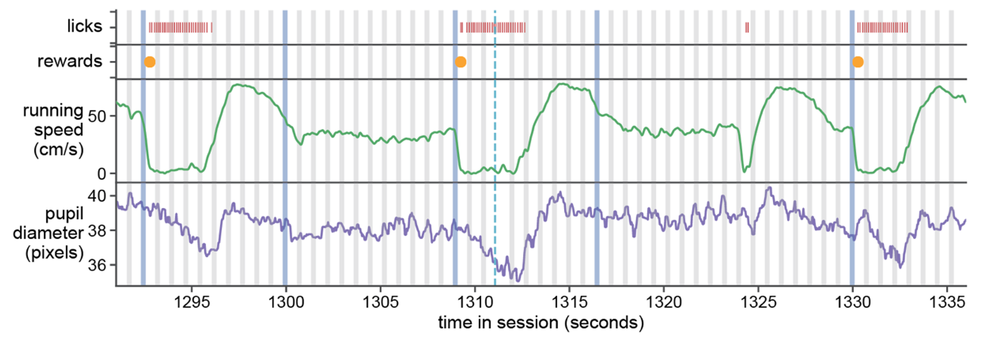

Visual Behavior Task Overview#
The Visual Behavior Ophys and Visual Behavior Neuropixels datasets are built around a visual change detection task. Measuring neural activity during goal directed behavior enables the joint analysis of brain and behavioral states during visual perception, decision making, and learning.
Running speed, licking, and reward delivery are measured during all behavior sessions. Pupil diameter and eye position are only measured during 2-photon or Neuropixels recording sessions.

Change Detection Task#
The task consists of a series of sequentially presented visual stimuli and mice learn to report changes in stimulus identity by licking a spout to earn water rewards. In the final stage of the task, when neural activity measurements are made, natural scene images stimuli are presented for 250 milliseconds followed by a 500 millisecond gray screen interval. This requires that mice compare the current stimulus with the one they saw prior to the gray screen interval, which adds a working memory component to the task. During neural recordings, but not during training, 5% of non-change stimulus presentations are randomly omitted, interrupting the expected stimulus cadence. The stimuli and task parameters used during behavioral training are described in the Behavior Training section below.

On each trial of the task, a change time is selected from a geometric distribution between 4 and 12 flashes after the time of the last change or the last lick. On “go” trials, the image identity will change at the selected change time. If the mouse licks within the 750 millisecond response window, the trial is considered a hit and a reward is delivered. If the mouse fails to lick after the change, the trial is considered a miss. There is a 3 second “grace period” following each change trial during which licks do not influence the task flow, to allow time for animals to consume the reward.

On “catch” trials, a change is drawn but the image identity does not change. If the mouse licks within the reward window following the sham change, the trial is considered a false alarm and no reward is delivered. Correctly witholding a lick on a catch trial is a correct reject. This definition of a catch trial is a conservative one, and only consideres the non-change stimulus presentations that are drawn from the same distribution as the change times. A less restrictive definition could consider every non-change stimulus presentation as a catch trial, and the false alarm rate can be computed this way as well.
If the mouse licks prior to the scheduled change time, the trial is aborted and starts over again, using the same change time for up to 5 trials in a row. This is to discourage false alarm licks and help shape the behavior, by requiring that mice wait until the change time to respond and get a reward.
On change trials, a 3 second “grace period” occurs during which licking behavior does not influence the task flow, to allow time for mice to consume the reward.
Behavior Training#
Mice learned the change detection task through a series of training stages, with transitions between stages determined by specific advancement criteria.
On the very first day of training, mice observe changes in the orientation of full field static grating stimuli and are automatically rewarded at the time of the orientation change. This serves to form an association between stimulus changes and rewards, and to help the mice learn to interact with the lick spout. On the second day, rewards are contingent on the mouse licking the reward spout after the stimulus changes. In the next stage, a 500ms inter stimulus interval period with mean luminance gray screen is added between 250ms stimulus presentations, incorporating a short-term memory component to the task.

Once mice successfully and consistently performed orientation change detection with flashed gratings, they moved to the image change detection version of the task. During image change detection, 8 natural scene images were presented during each behavioral session, for a total of 64 possible image transitions. When behavioral performance again reached criterion (d-prime >1 for 2 out of 3 consecutive days), mice were transitioned to the 2-photon imaging or Neuropixels recording stage in which they performed the task during simultaneous measurement of neural activity and behavior.
During recording sessions (but not during training), stimulus presentations are randomly omitted with a 5% probability, resulting in an extended gray screen period between two presentations of the same stimulus and disrupting the expected cadence of stimulus presentations. The change and pre-change stimulus presentations are never omitted.

Session Types#
The stages of behavioral training and different types of neurophysiology sessions are described by their session_type. The session_type indicates whether the session occured during training or during neural activity measurements, as well as what stimulus was used and whether the session was active behavior or passive viewing session in the case of Visual Behavior Ophys sessions (Visual Behavior Neuropixels sessions have active and passive blocks in the same sessions).
Below is a detailed description of the features of each session_type:
********* INSERT DEFINITION OF EACH SESSION TYPE ********
Image Sets#
********* INSERT IMAGES OF STIMULI ********